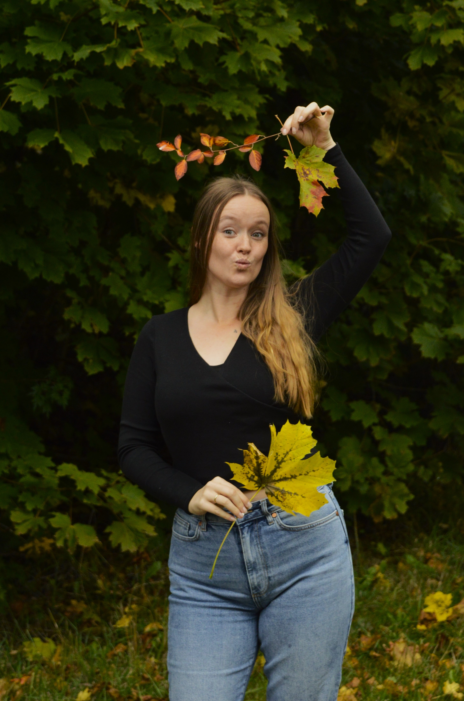
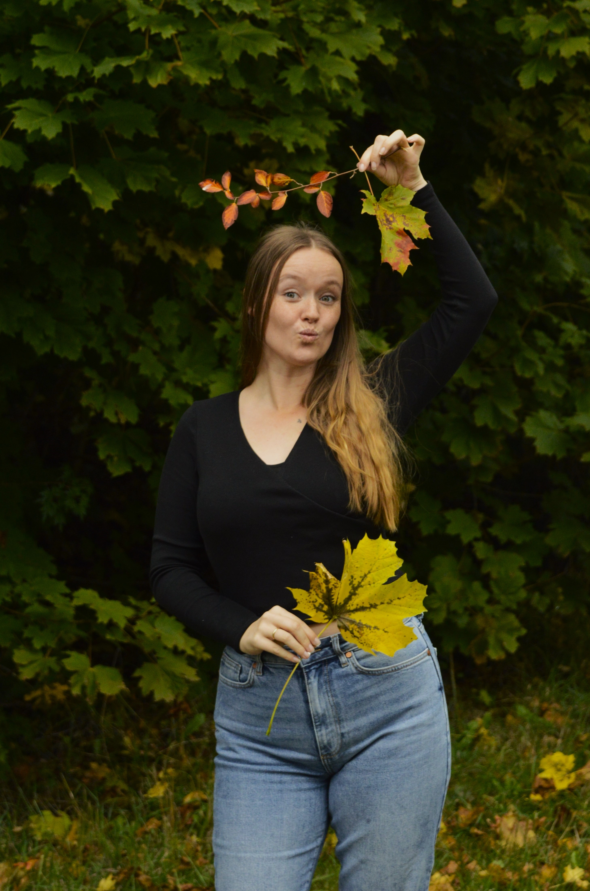

Bittelitt om oss
Jeg er 27 år gammel, gift og tobarnsmor. Jeg har bakgrunn innen
kommunikasjon, språk og oversetting
etter å ha tatt bachelorgrad i oversetting og interkulturell kommunikasjon. Sommeren 2025 jobbet jeg som
student project developer hos The Social Gaming Group
(techfirma som lager løsninger for sosial gaming) og fikk bryne meg på en del UX- og UI-arbeid.
Høsten 2025 er jeg i
praksis hos E-Waves
og får jobbe med å ta nettsiden deres til neste nivå. I tillegg er jeg ansatt i to stillinger som
mentor og læringsassistent på instituttet
og får mye repetisjon av tidligere pensum. I dag jobber jeg målrettet mot en karriere som utvikler, gjerne innen
backend
eller
fullstack.
Interessen min for IT og informasjonssystemer startet i 2022,
da jeg ble sittende i to uker sammen med en seniorutvikler som kjedet seg og ville vise meg hvordan man kan programmere og lage et spill.
I løpet av de to ukene lærte jeg mye og ble ordentlig imponert over at man kan skrive inn en haug med ord, kolon og parentes,
så popper det plutselig masse forskjellig opp på skjermen! Det ønsker jeg å gjøre mer av!
På kvelden tar jeg Full-Stack Engineer-kurs på Codecademy for å videreutvikle meg.
 

Gruppeleder, fullstackutvikler
Jeg heter Hannah og er 21 år. Jeg begynte å studere IT da jeg ønsket å bli del av en bransje som stadig er i utvikling, og hvor man alltid har muligheten til å lære noe nytt.
Etter hvert har interessen min spesielt rettet seg mot sikkerhet og kunstig intelligens som er to områder jeg synes er både spennende og fremtidsrettede.
For tiden er jeg
praktikant i Devoteam
der jeg jobber med regulatoriske krav til sikkerhet, da særskilt sikkerhetsloven.
I korte trekk er min oppgave å lage en metodikk for Devoteam innen sikkerhetsgraderte anskaffelser .
Jeg har fullført e-læringskurs i Sikkerhetsgraderte anskaffelser via Nasjonal Sikkerhetsmyndighet (NSM),
og hatt Information Systems Security som emne.
Som person trives jeg godt med å ha mange prosjekter på gang. Ved siden av studiene jobber jeg både i klesbutikk og i barnehage.
Jeg er også aktiv innen styrketrening, dans og cheerleading. Disse erfaringene har gjort meg til en person som setter stor pris på menneskene rundt meg,
og jeg har utviklet gode egenskaper innen samarbeid, problemløsning og engasjement.
Jeg liker å utfordre meg selv, er nysgjerrig på nye erfaringer og motiveres av muligheten til å utvikle meg og nå nye høyder både faglig og personlig.


Scrum master, sikkerhetsansvarlig
Jeg er 22 år gammel og har en sterk interesse for backend- og fullstack-utvikling.
Gjennom studiene har jeg bygget en solid teknisk forståelse, samtidig som jeg har utforsket hvordan jeg kan bidra til å utvikle gode, bærekraftige og sikre digitale løsninger.
Jeg motiveres av mestringsfølelsen ved å løse problemstillinger, og trives best når jeg kan samarbeide i team, dele idéer og lære av andre.
Dette semesteret har jeg
praksis hos Tingtun AS
. Der har jeg ett soloprosjekt hvor jeg skal lage ett system for å ta opp video fra nettleser uten eksterne programmer. Videoene sendes
videre til en server hvor de skal transkriberes og analyseres av KI. Her får jeg erfaring innen Javascript, Secure Shell og personvern.
Jeg har vært glad i data helt siden jeg var liten, og interessen har vokst til en lidenskap for teknologi og programmering. Jeg har lenge vært den man spør dersom man har problemer med å få i gang både PC og programmer, noe som har gjort meg både vant til og glad i både “tinkering” og problemløsning.
På fritiden liker jeg å være aktiv, enten gjennom trening eller turer i naturen. Jeg er også interessert i å spille sammen med venner.


Backend-ansvarlig, teambuilder